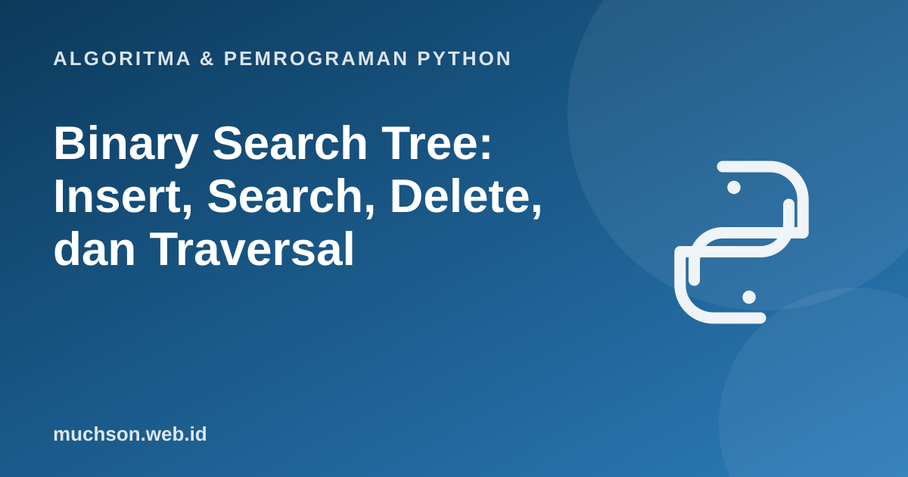

Beranda › Artikel › Algoritma & Pemrograman Python
Algoritma & Pemrograman PythonBinary Search Tree: Insert, Search, Delete, dan Traversal
Binary search tree (BST) menggabungkan kecepatan pencarian biner dengan kemudahan menyisip dan menghapus pada linked list. Syaratnya satu aturan sederhana: semua nilai di kiri lebih kecil dan semua nilai di kanan lebih besar. Dari aturan itu lahir pencarian yang sangat cepat, selama pohonnya tidak melengkung.
Sebaiknya sudah paham: rekursi, kelas dan objek, binary search

Setelah membaca dan mencoba materi ini, Anda mampu:
- menyatakan sifat BST dan memeriksa apakah sebuah pohon valid
- mengimplementasikan sisip, cari, minimum, dan tinggi
- menghapus node pada tiga kasus: daun, satu anak, dua anak
- melakukan traversal in-order, pre-order, post-order, dan per tingkat
- menjelaskan mengapa kompleksitas bergantung pada tinggi pohon
Sifat BST
Implementasi: sisip, cari, minimum, tinggi
class Node:
def __init__(self, nilai):
self.nilai, self.kiri, self.kanan = nilai, None, None
def sisip(node, nilai):
if node is None:
return Node(nilai)
if nilai < node.nilai:
node.kiri = sisip(node.kiri, nilai)
elif nilai > node.nilai:
node.kanan = sisip(node.kanan, nilai)
return node # duplikat diabaikan
def cari(node, nilai):
while node and node.nilai != nilai:
node = node.kiri if nilai < node.nilai else node.kanan
return node is not None
def minimum(node):
while node.kiri:
node = node.kiri
return node
def tinggi(node):
return 0 if node is None else 1 + max(tinggi(node.kiri), tinggi(node.kanan))
akar = None
for v in [50, 30, 70, 20, 40, 60, 80]:
akar = sisip(akar, v)
print(cari(akar, 60), cari(akar, 65), minimum(akar).nilai, tinggi(akar))True False 20 3
Traversal
| Traversal | Urutan kunjungan | Kegunaan |
|---|---|---|
| In-order | kiri → akar → kanan | Menghasilkan nilai terurut pada BST |
| Pre-order | akar → kiri → kanan | Menyalin atau menyimpan pohon |
| Post-order | kiri → kanan → akar | Menghapus pohon, menghitung ukuran subpohon |
| Per tingkat (BFS) | tingkat demi tingkat | Mencari jalur terpendek, mencetak per lapis |
from collections import deque
def inorder(n): return inorder(n.kiri) + [n.nilai] + inorder(n.kanan) if n else []
def preorder(n): return [n.nilai] + preorder(n.kiri) + preorder(n.kanan) if n else []
def postorder(n): return postorder(n.kiri) + postorder(n.kanan) + [n.nilai] if n else []
def per_tingkat(n):
hasil, antre = [], deque([n] if n else [])
while antre:
x = antre.popleft(); hasil.append(x.nilai)
antre.extend(c for c in (x.kiri, x.kanan) if c)
return hasil
print("in-order :", inorder(akar))
print("pre-order :", preorder(akar))
print("post-order :", postorder(akar))
print("per tingkat:", per_tingkat(akar))in-order : [20, 30, 40, 50, 60, 70, 80]
pre-order : [50, 30, 20, 40, 70, 60, 80]
post-order : [20, 40, 30, 60, 80, 70, 50]
per tingkat: [50, 30, 70, 20, 40, 60, 80]
Menghapus node: tiga kasus
def hapus(node, nilai):
if node is None:
return None
if nilai < node.nilai:
node.kiri = hapus(node.kiri, nilai)
elif nilai > node.nilai:
node.kanan = hapus(node.kanan, nilai)
else: # node ditemukan
if node.kiri is None: return node.kanan # kasus 1 dan 2
if node.kanan is None: return node.kiri
penerus = minimum(node.kanan) # kasus 3
node.nilai = penerus.nilai
node.kanan = hapus(node.kanan, penerus.nilai)
return node
akar = hapus(akar, 20) # daun
akar = hapus(akar, 70) # dua anak (60 dan 80)
akar = hapus(akar, 30) # satu anak (40)
print(inorder(akar), per_tingkat(akar))[40, 50, 60, 80] [50, 40, 80, 60]
Kompleksitas: semuanya soal tinggi pohon
Sisip, cari, dan hapus masing-masing butuh waktu O(h) dengan h tinggi pohon. Bila pohon seimbang, h ≈ log₂ n. Bila data masuk terurut, pohon melengkung seperti linked list dan h = n.
import random
def tinggi_pohon(urutan):
akar = None
for v in urutan:
akar = sisip(akar, v)
return tinggi(akar)
n = 500
acak = random.Random(11).sample(range(n), n)
print("data acak : tinggi", tinggi_pohon(acak), "(sekitar 2 log2 n =", round(2 * 8.97), ")")
import sys; sys.setrecursionlimit(5000)
print("data terurut: tinggi", tinggi_pohon(list(range(n))), "(= n, pohon melengkung)")data acak : tinggi 18 (sekitar 2 log2 n = 18 )
data terurut: tinggi 500 (= n, pohon melengkung)
Untuk menjamin O(log n) pada semua masukan, dipakai pohon seimbang otomatis seperti AVL tree dan red-black tree, yang menata ulang pohon (rotasi) saat ketidakseimbangan terjadi. Pustaka standar banyak bahasa (misalnya TreeMap di Java) memakainya. Python tidak punya BST seimbang bawaan; sorted() dengan bisect sering cukup.
1. Sisipkan 8, 3, 10, 1, 6, 14, 4, 7, 13 ke BST kosong. Gambarkan pohonnya dan tuliskan traversal in-order.
2. Berapa tinggi pohon pada soal sebelumnya?
3. Tulis fungsi yang memeriksa apakah sebuah pohon biner adalah BST yang valid.
def valid(n, lo=-inf, hi=inf): return n is None or (lo < n.nilai < hi and valid(n.kiri, lo, n.nilai) and valid(n.kanan, n.nilai, hi)). Atau periksa bahwa in-order terurut ketat.4. Mengapa cukup memeriksa anak langsung tidak cukup untuk memvalidasi BST?
- BST: kiri lebih kecil, kanan lebih besar, untuk setiap node.
- Sisip, cari, hapus berbiaya O(h); seimbang h ≈ log n, melengkung h = n.
- Hapus: daun, satu anak, atau dua anak (ganti dengan penerus in-order).
- In-order menghasilkan urutan terurut; pre-order, post-order, dan per tingkat punya kegunaan sendiri.
- AVL dan red-black tree menjaga keseimbangan secara otomatis.
Tanya jawab
Apa bedanya BST dengan binary heap?
Mengapa tidak memakai dict saja?
Bagaimana BST menangani duplikat?
Referensi
- Cormen, Leiserson, Rivest, Stein, Introduction to Algorithms (edisi ke-4, MIT Press, 2022)
- Robert Sedgewick dan Kevin Wayne, Algorithms (edisi ke-4), materi pendamping algs4.cs.princeton.edu
- MIT OpenCourseWare 6.006: Introduction to Algorithms
- Dokumentasi Python: bisect, Array bisection algorithm